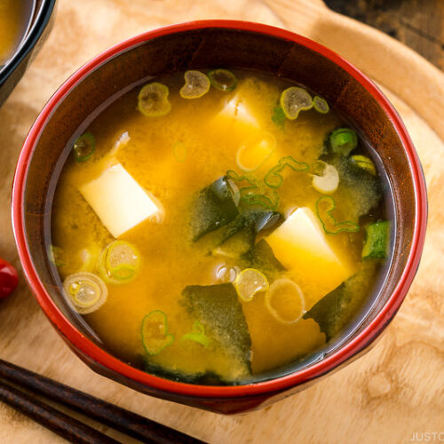

Miso soup

Description
This miso soup is full of savory flavors. Add more dashi to your soup if you want a stronger stock. You can use
yellow, white, or red miso paste for this soup — yellow miso is sweet and creamy, red miso is stronger and
saltier.
Ingredients
- Water
- Dashi granules and miso paste
- Tofu
- Green onion
Steps
- Bring the water and dashi granules to a boil.
- Reduce the heat and whisk in miso paste.
- Stir in the tofu and green onions.
- Simmer and serve.